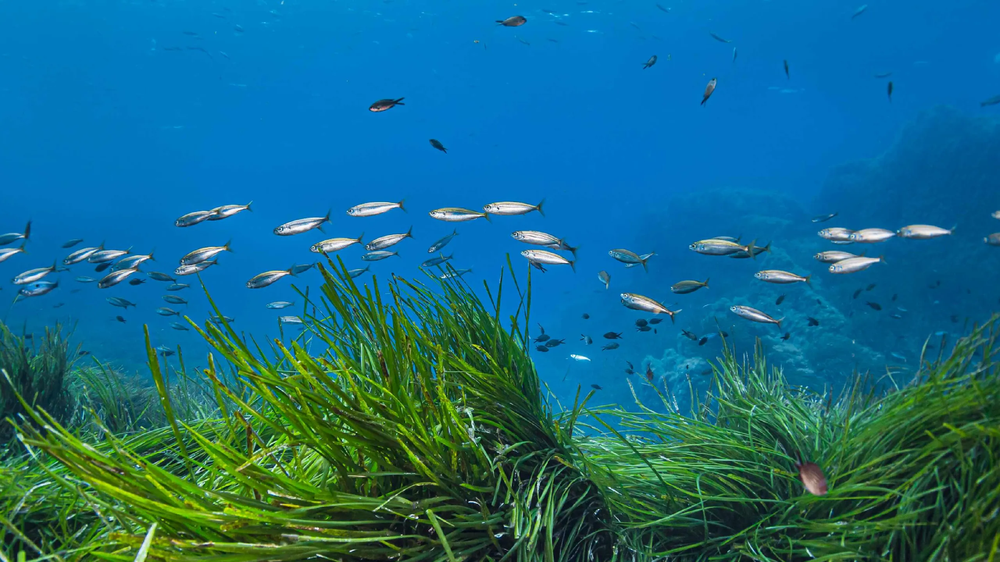
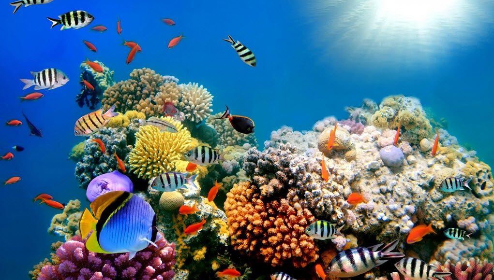
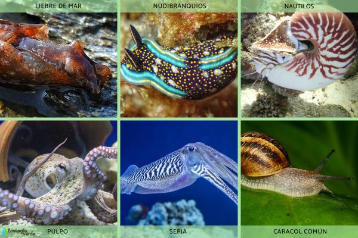

¿Cuál es la estructura viva más grande del mundo

Los arrecifes de coral son la estructura viva más grande del planeta y la única estructura viva visible desde el espacio. Son creados por millones de diminutos pólipos que forman grandes estructuras carbonatadas que, a su vez, ofrecen hogar a otras especies.
A menudo los arrecifes de coral son llamados "selvas del mar", ya que forman uno de los ecosistemas más diversos de la Tierra. Aunque ocupan menos del 0,1 % de la superficie total de los océanos, equivalente a la mitad de la superficie de Francia, son el hábitat de 25 % de todas las especies marinas, incluyendo peces, moluscos, gusanos, crustáceos, equinodermos, esponjas, tunicados y otros cnidarios.Paradójicamente, los arrecifes de coral prosperan a pesar de estar rodeados por aguas oceánicas que proporcionan pocos nutrientes. Son más comúnmente encontrados en aguas tropicales poco profundas, pero también existen, en menor escala, corales de aguas profundas y corales de aguas frías en otras zonas.
Formación de los arrecifes de coral.
Los pólipos de coral se anclan a las rocas del lecho marino y, a lo largo de miles de años, secretan carbonato de calcio para formar sus esqueletos. Estos esqueletos se agrupan y crean grandes estructuras que pueden extenderse por kilómetros
Tipos de arrecifes de coral
- Arrecifes costeros: Se encuentran cerca de la costa y a veces están separados de ella por lagunas poco profundas.
- Arrecifes de barrera: Están separados de la costa por canales profundos o lagunas.
- Atolones: Son los anillos de arrecifes que rodean una laguna central
Importancia ecológica
Por su situación estratégica entre la costa y el mar abierto, los arrecifes sirven de barrera que protege a los manglares y las praderas de hierbas marinas contra los embates del oleaje; los manglares y praderas de hierbas, a su vez, protegen al arrecife contra la sedimentación y sirven como áreas de reproducción y crianza para muchas de las especies que forman parte del ecosistema del arrecife.
Más de 800 especies de corales capaces de construir arrecifes crean hábitats que albergan un 32% de todas las especies marinas nombradas, excluyendo microbios y hongos. A esto se suma una estimación increíble: ¡aún no se han descubierto el 91% de las especies marinas!
Tipo de corales.
Existen varios tipos de corales: los corales blandos o corales ahermatípicos y los corales duros, mejor conocidos como pétreos o corales hermatípicos. En los arrecifes del Indo-Pacífico se han identificado hasta 750 especies, mientras que en el Atlántico hay alrededor de 146 especies y en el Caribe se han descrito 60 especies de corales pétreos.
Algas
Los arrecifes corren un riesgo constante de sobrepoblación de algas. La sobrepesca y la afluencia excesiva de nutrientes provenientes de la costa y del interior, pueden causar una sobrepoblación de algas que puede resultar en la muerte de los corales.5455 Estudios realizados en torno a islas del Pacífico de los Estados Unidos -en gran parte deshabitadas- comprobaron que las algas viven en un gran porcentaje de las localidades de coral investigadas.La población de algas se compone de clorófitos, algas coralinas y macroalgas.
Peces
Más de 4000 especies de peces habitan en los arrecifes de coral.2 Cuando están sanos, los arrecifes de coral pueden producir hasta 35 toneladas de peces por kilómetro cuadrado cada año; en cambio los arrecifes dañados producen mucho menos
Los peces que viven en los arrecifes de coral pueden ser tan coloridos como los propios corales. Algunos ejemplos son los peces loro, la familia Pomacanthidae (pez ángel), damisela, Clinidae o los peces mariposa (Chaetodontidae). Por la noche, algunos cambian a un color menos intenso.[cita requerida]
Invertebrados
Los erizos de mar o los nudibranquios se alimentan de algas. Algunas especies de erizos de mar en particular, tales como Diadema antillarum, pueden desempeñar un papel fundamental en la prevención de la sobrepoblación de algas en los arrecifes de coral.
Un número de invertebrados ocupan el substrato esquelético del coral, ya sea perforando en los esqueletos (a través del proceso de bioerosión) o habitando en grietas preexistentes. Los animales que perforan la roca incluyen esponjas, bivalvos, moluscos y Sipuncula. Entre los animales que se instalan en el propio arrecife se incluye muchas especies, especialmente los crustáceos y gusanos poliquetos.
Amenazas
Los arrecifes de coral están muriendo en el mundo entero.68 Las principales amenazas localizadas para los ecosistemas coralinos son la extracción de coral, escorrentía agrícola y urbana, contaminación (orgánicos e inorgánicos), sobrepesca, pesca con explosivos, la enfermedad y la excavación de canales de acceso a islas y bahías. Las amenazas más amplias incluyen el aumento de la temperatura del mar, la subida del nivel del mar, y el cambio del pH debido a la acidificación de los océanos, todos asociados con las emisiones de gases de efecto invernadero.
Protección
Las áreas marinas protegidas (AMP) se han vuelto cada vez más importantes para el manejo de los arrecifes. Las AMP promueven formas responsables de gestión de pesca y manejo de hábitat. Al igual que los parques nacionales y los refugios de vida silvestre, las AMP restringen actividades potencialmente dañinas. Las AMP incorporan objetivos sociales y biológicos, incluyendo la restauración de los arrecifes, estética, biodiversidad y beneficios económicos. Los conflictos que rodean a las zonas marinas protegidas se deben a la falta de participación, opiniones opuestas, eficacia y financiación.
Actuemos ahora para reducir nuestra huella de carbono, evitar el uso de plásticos y apoyar prácticas de pesca sostenibles. Cada pequeño esfuerzo cuenta. Al proteger los arrecifes de coral, no solo preservamos su belleza, sino que también aseguramos un futuro saludable para nuestro planeta y para las generaciones venideras.